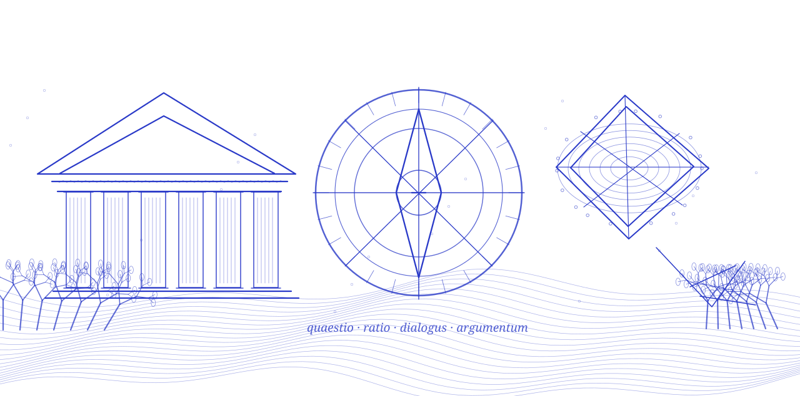

Dirección / editor responsable
Dr. Fabián Bernache Maldonado
Dirección y trabajo editorial identificados en las fuentes oficiales de la publicación.
REVISTA · Argumentación · ISSN 2448-6485
La revista detrás de los argumentos: sus personas, métodos e historia.
Quadripartita Ratio es una revista académica electrónica, semestral, arbitrada y de acceso abierto, editada en el ámbito del Departamento de Filosofía del CUCSH. Atiende la retórica, la teoría de la argumentación y la lógica aplicada al razonamiento natural.

LIBREEl archivo de Quadripartita Ratio contiene 88 publicaciones de 21 números editoriales, presentadas como estampillas bibliográficas con grabados originales. La historia editorial continúa en cada texto.
Volver al archivo de la revistaEl diálogo riguroso entre retórica, lógica, persuasión y teoría de la argumentación.
Su ámbito de estudio se concentra en las prácticas de argumentar, razonar y persuadir: retórica, lógica, diálogo, reconstrucción de argumentos y examen de las falacias. El proyecto se vincula con el Departamento de Filosofía y el cuerpo académico de Retórica, lógica y argumentación.
La revista mantiene nóminas diferenciadas de equipo editorial, comité editorial, comité científico y comité dictaminador. Este directorio reproduce los primeros tres grupos desde sus páginas oficiales y enlaza el listado de dictaminadores sin adjudicar relaciones que la fuente no documenta.
“La razón también tiene una historia: se discute en público, se somete a objeciones y aprende.”Lectura editorial de Investigación Filosófica · no es una cita oficial de la revista
Dirección, coordinación, responsabilidades y consejos editoriales, con una separación clara entre información verificada y límites de la documentación disponible.
Dirección y coordinación
Dirección y trabajo editorial identificados en las fuentes oficiales de la publicación.
El portal utiliza variantes «Casteñeda» y «Castañeda» en distintas secciones; aquí se reproduce la ficha del equipo editorial.
Consejos, comités y colaboradores
Los comités se presentan como nóminas publicadas, no como prueba independiente de membresía vigente. La propia página editorial conserva menciones históricas, incluidas personas fallecidas. El comité dictaminador completo puede consultarse en la fuente original.
Correo de contacto principal indicado en el portal editorial de Quadripartita Ratio. Latindex también conserva el contacto histórico revista.qratio@csh.udg.mx; prevalece para esta ficha el canal publicado por la propia revista.
Departamento de Filosofía · CUCSH · Universidad de Guadalajara · Zapopan, Jalisco, México. Verifique el domicilio antes de acudir: distintas secciones del portal conservan direcciones de sedes anteriores.
Para postular trabajos, consulte primero las normas, los plazos y el procedimiento de la revista en su portal oficial.
Ir al sitio editorial ↗La procedencia es parte del trabajo académico. Cada nombre, cargo y dato institucional debe poder rastrearse hasta una referencia identificable.
La página del equipo editorial escribe «Casteñeda» y otras partes del portal «Castañeda». No se ha adjudicado una corrección biográfica sin corroboración. Las nóminas científicas pueden incluir miembros históricos.
Esta es una ficha de investigación y divulgación elaborada por Investigación Filosófica; no representa el sitio oficial de la revista ni sustituye sus decisiones editoriales.